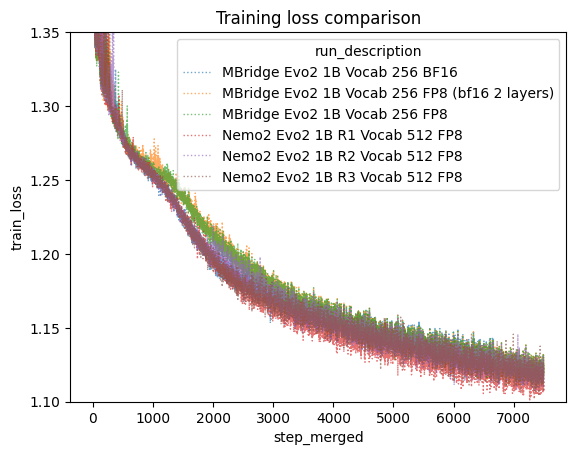

Evo2 Recipe
A self-contained training, inference, and checkpoint conversion recipe for Evo2 genomic foundation models built on Megatron Bridge. This recipe supports the Evo2 (Striped Hyena) architecture through a unified training and inference CLI, along with import and export tools for use in other packages.
Evo2
Evo2 is a family of long-context genomic foundation models based on the Striped Hyena (SSM + Attention) architecture, developed by the Arc Institute. Evo2 models are trained on the OpenGenome2 dataset and scale from 1B to 40B parameters with context lengths up to 1M+ nucleotides. They achieve state-of-the-art performance on gene essentiality prediction, variant effect prediction, and de novo sequence generation across prokaryotic and eukaryotic genomes.
Installation
./.ci_build.sh # build the virtualenv
source ./.ci_test_env.sh # source the virtualenv
CLI tools
All CLI tools are defined in pyproject.toml under [project.scripts].
| Command | Description |
|---|---|
train_evo2 |
Train or fine-tune Hyena models |
infer_evo2 |
Autoregressive text generation (greedy/sampling) |
predict_evo2 |
Batch log-likelihood scoring on FASTA sequences |
preprocess_evo2 |
Convert FASTA files to Megatron indexed binary format |
splice_evo2 |
Extract spliced transcripts from FASTA + GTF files |
evo2_convert_nemo2_to_mbridge |
Convert NeMo2 checkpoints to MBridge DCP format |
evo2_convert_savanna_to_mbridge |
Convert Savanna checkpoints to MBridge DCP format |
evo2_export_mbridge_to_vortex |
Export MBridge checkpoint to Vortex .pt format |
evo2_remove_optimizer |
Strip optimizer state from an MBridge checkpoint |
bionemo_fasta_to_jsonl |
Convert FASTA files to JSONL format |
Run any tool with --help for full usage details.
Quick start
Training with mock data (Hyena)
torchrun --nproc-per-node 2 --no-python \
train_evo2 \
--hf-tokenizer-model-path tokenizers/nucleotide_fast_tokenizer_256 \
--model-size striped_hyena_1b_nv_parallel --max-steps 12 --eval-interval 10 \
--eval-iters 3 --mock-data \
--micro-batch-size 16 --global-batch-size 32 --seq-length 1024 \
--tensor-model-parallel 1 \
--use-precision-aware-optimizer --dataset-seed 33 \
--seed 41 --spike-no-more-embedding-init \
--no-weight-decay-embeddings --cross-entropy-loss-fusion \
--align-param-gather --overlap-param-gather --grad-reduce-in-fp32 \
--decay-steps 100 --warmup-steps 10 \
--mixed-precision-recipe bf16_with_fp8_current_scaling_mixed \
--no-fp32-residual-connection --activation-checkpoint-recompute-num-layers 1 \
--attention-dropout 0.001 --hidden-dropout 0.001 \
--eod-pad-in-loss-mask --enable-preemption \
--log-interval 5 --debug-ddp-parity-freq 10 \
--result-dir tmpfp8 --no-renormalize-loss \
--use-subquadratic-ops
Tip: The
--use-subquadratic-opsflag enables a fused back-to-back causal convolution CUDA kernel for the Hyena short-conv layers. This provides a meaningful speed-up for training and prediction and is recommended for all production runs. It does not apply to autoregressive inference (infer_evo2). There is a one-time compilation cost on first use.
Autoregressive generation (infer_evo2)
Generate DNA sequences from a prompt using an MBridge checkpoint:
torchrun --nproc_per_node 1 --no-python \
infer_evo2 \
--ckpt-dir /path/to/mbridge/checkpoint \
--prompt "ATCGATCGATCGATCG" \
--max-new-tokens 200 \
--temperature 1.0 \
--output-file generated.txt
Options:
--ckpt-dir— path to MBridge checkpoint directory (required).--prompt/--prompt-file— input sequence (inline or from file).--max-new-tokens— number of tokens to generate (default: 100).--temperature— sampling temperature (default: 1.0).--top-k/--top-p— top-k or nucleus sampling (0 = disabled).--tensor-parallel-size— tensor parallelism for large models (default: 1).--max-seq-length— maximum sequence length (default: 8192).
Batch sequence scoring (predict_evo2)
Compute log-likelihoods for sequences in a FASTA file:
torchrun --nproc_per_node 1 --no-python \
predict_evo2 \
--fasta /path/to/sequences.fasta \
--ckpt-dir /path/to/mbridge/checkpoint \
--output-dir predictions/ \
--micro-batch-size 4 \
--write-interval epoch \
--use-subquadratic-ops
Options:
--fasta— input FASTA file (required).--ckpt-dir— MBridge checkpoint directory (required).--output-dir— directory for output prediction files.--output-log-prob-seqs— output log probabilities instead of raw logits.--log-prob-collapse-option— aggregation:sum,mean, orper_token.--embedding-layer— extract embeddings from a specific layer instead of logits (supports negative indexing, e.g.,-1for last layer).--mask-phylogenetic-tags— mask phylogenetic tags in loss computation.--use-subquadratic-ops— enable fused Hyena convolution kernels for faster scoring (recommended for larger datasets; has a one-time compilation cost).
Data preprocessing (preprocess_evo2)
Convert FASTA files into Megatron's indexed binary format for training:
preprocess_evo2 --config preprocess_config.yaml
The config YAML specifies input FASTA paths, output directory, train/val/test splits,
tokenizer settings, and preprocessing options. See the fine-tuning-tutorial.ipynb
notebook in examples/ for a complete example.
Transcript extraction (splice_evo2)
Extract spliced transcripts from a genome FASTA and GTF annotation:
splice_evo2 \
--fasta-path genome.fa \
--gtf-path annotations.gtf \
--output-path transcripts.fa \
--only-longest-transcript
Options:
--transcript-type—defaultorstitched(includes promoter + intron context).--stitched-promoter— bp to include from promoter region (default: 1024).--stitched-intron— bp from neighboring introns (default: 32).--only-longest-transcript— keep only the longest transcript per gene.
Removing optimizer state from a checkpoint
Training checkpoints include optimizer state (Adam moments, LR scheduler, RNG state)
which roughly triples checkpoint size. Use evo2_remove_optimizer to produce a
smaller weights-only checkpoint suitable for release or fine-tuning:
evo2_remove_optimizer \
--src-ckpt-dir /path/to/training/checkpoints \
--dst-ckpt-dir /path/to/weights_only_checkpoint
The tool automatically finds the latest iter_* directory, strips optimizer and
scheduler state from the DCP files, and copies model weights, tokenizer, and
config files to the destination. The resulting checkpoint is directly usable
with --finetune-ckpt-dir or the export tools.
Fine-tuning from an existing checkpoint
From NeMo2 checkpoints (NGC)
Convert the checkpoint from NeMo2 format, then fine-tune:
CKPT_NAME=evo2/1b-8k-bf16:1.0
CKPT_OUT_DIR=evo2_1b_8k_bf16_mbridge
evo2_convert_nemo2_to_mbridge \
--mixed-precision-recipe bf16_with_fp8_current_scaling_mixed \
--tokenizer-path tokenizers/nucleotide_fast_tokenizer_512 \
--model-size evo2_1b_base \
--seq-length 8192 \
--nemo2-ckpt-dir $(download_bionemo_data $CKPT_NAME) \
--mbridge-ckpt-dir $CKPT_OUT_DIR
Good checkpoint names to try are:
evo2/1b-8k-bf16:1.0(model_size:evo2_1b_base)evo2/7b-1m:1.0(model_size:evo2_7b)evo2/40b-1m-fp8-bf16:1.0(model_size:evo2_40b)
Other than the 7b version, the other two are checkpoints fine-tuned by the BioNeMo team to support both FP8 and BF16
precision. The 7b version worked well on both FP8 and BF16 out of the box so it was not fine-tuned further. If you do
want to use one of the FP8 sensitive checkpoints, like evo2/40b-1m then be sure to add the --vortex-style-fp8
option to the checkpoint conversion step. Also note that although 8k versions of the 7b and 40b checkpoints exist,
it is advisable to use the longer context versions since they were trained further and still run on shorter inputs.
See download_bionemo_data --list-resources for other checkpoint options and a list of available
downloadable resources.
Now fine-tune with --finetune-ckpt-dir. If you have problems with
bf16_with_fp8_current_scaling_mixed try bf16_mixed.
torchrun --nproc-per-node 2 --no-python \
train_evo2 \
--hf-tokenizer-model-path tokenizers/nucleotide_fast_tokenizer_512 \
--model-size evo2_1b_base --max-steps 12 --eval-interval 10 \
--eval-iters 3 --mock-data \
--micro-batch-size 16 --global-batch-size 32 --seq-length 1024 \
--tensor-model-parallel 1 \
--use-precision-aware-optimizer --dataset-seed 33 \
--seed 41 \
--cross-entropy-loss-fusion \
--align-param-gather --overlap-param-gather --grad-reduce-in-fp32 \
--decay-steps 100 --warmup-steps 10 \
--mixed-precision-recipe bf16_with_fp8_current_scaling_mixed \
--no-fp32-residual-connection --activation-checkpoint-recompute-num-layers 1 \
--attention-dropout 0.001 --hidden-dropout 0.001 \
--eod-pad-in-loss-mask --enable-preemption \
--log-interval 5 --debug-ddp-parity-freq 10 \
--result-dir tmpfp8-ft-example --no-renormalize-loss \
--use-subquadratic-ops \
--finetune-ckpt-dir $CKPT_OUT_DIR
From Savanna checkpoints (HuggingFace)
ARC publishes Savanna-format checkpoints on HuggingFace for fine-tuning. Convert to MBridge format first:
evo2_convert_savanna_to_mbridge \
--savanna-ckpt-path arcinstitute/savanna_evo2_7b \
--mbridge-ckpt-dir evo2_7b_mbridge \
--model-size evo2_7b \
--tokenizer-path tokenizers/nucleotide_fast_tokenizer_512 \
--seq-length 1048576
The --savanna-ckpt-path accepts either a local .pt file path or a HuggingFace
repo ID (e.g., arcinstitute/savanna_evo2_1b_base). Available Savanna checkpoints:
| HuggingFace Repo | Model Size |
|---|---|
arcinstitute/savanna_evo2_1b_base |
evo2_1b_base |
arcinstitute/savanna_evo2_7b |
evo2_7b |
arcinstitute/savanna_evo2_40b_base |
evo2_40b_base |
Options:
--no-te— disable Transformer Engine fused layernorm key mapping (use if the checkpoint was saved without TE).--mixed-precision-recipe— precision recipe (default:bf16_mixed).--verbose/-v— enable debug logging.
Exporting to Vortex format
Vortex is ARC Institute's inference format for Evo2 Hyena models, used by the
evo2 inference repository. Export an MBridge
checkpoint to Vortex (.pt) using:
evo2_export_mbridge_to_vortex \
--mbridge-ckpt-dir /path/to/mbridge/iter_0000001 \
--output-path /path/to/output/model_vortex.pt \
--model-size evo2_1b_base
The exporter converts MBridge distributed-checkpoint weights into the single-file Vortex format expected by ARC's inference code. It handles MLP weight splitting, Hyena filter pole/residue computation, and layer-norm key remapping.
Options:
--model-size— one of theevo2_*orstriped_hyena_*Hyena model keys listed below.--no-te— disable Transformer Engine fused layernorm key mapping (use if the checkpoint was saved without TE).--verbose/-v— enable debug logging.
Savanna → MBridge → Vortex round-trip
If you have a Savanna checkpoint and want to produce a Vortex file, chain the two converters:
# Step 1: Savanna -> MBridge
evo2_convert_savanna_to_mbridge \
--savanna-ckpt-path arcinstitute/savanna_evo2_1b_base \
--mbridge-ckpt-dir /tmp/mbridge_1b \
--model-size evo2_1b_base \
--tokenizer-path tokenizers/nucleotide_fast_tokenizer_256
# Step 2: MBridge -> Vortex
evo2_export_mbridge_to_vortex \
--mbridge-ckpt-dir /tmp/mbridge_1b/iter_0000001 \
--output-path /tmp/evo2_1b_vortex.pt \
--model-size evo2_1b_base
Model naming convention
Model sizes are specified via --model-size and follow a naming convention that
disambiguates the model architecture, origin, and context length.
Hyena (SSM) models
| Key | Description |
|---|---|
evo2_1b_base |
ARC 1B, 8K context |
evo2_7b_base |
ARC 7B, 8K context |
evo2_7b |
ARC 7B, 1M context |
evo2_40b_base |
ARC 40B, 8K context |
evo2_40b |
ARC 40B, 1M context |
striped_hyena_1b_nv |
NVIDIA-modified 1B variant |
striped_hyena_7b_nv |
NVIDIA-modified 7B variant |
striped_hyena_40b_nv |
NVIDIA-modified 40B variant |
striped_hyena_test |
Tiny test model |
striped_hyena_test_nv |
Tiny test model (NV variant) |
striped_hyena_1b_nv_parallel |
NVIDIA 1B variant (parallel) |
Models prefixed with evo2_ match the public ARC checkpoints on
Hugging Face (e.g., arcinstitute/savanna_evo2_1b_base). The _base
suffix denotes the 8K-context variant; without it, the model uses the
long (1M) context length. Models prefixed with striped_hyena_ are
NVIDIA-modified variants that do not have a corresponding public ARC
checkpoint.
Examples
The examples/ directory contains Jupyter notebooks demonstrating common workflows:
| Notebook | Description |
|---|---|
zeroshot_brca1.ipynb |
Zero-shot BRCA1 variant effect prediction with Evo2 1B |
fine-tuning-tutorial.ipynb |
Fine-tune the 1B checkpoint on human chromosomes |
Docker build
docker build -t evo2_megatron_recipe-$(git rev-parse --short HEAD) .
Performance and accuracy comparisons
NOTE: this section is largely a work in progress. This reflects the most updated information, but may not reflect the current state of the code base at any given time.
Training accuracy convergence
We ran a 12 hour 48 H100 GPU training run to compare megatron bridge with nemo2. We found that FP8 current scaling converges by around the 5,000th step to the bf16 lines. And that bf16 is comparable with nemo2. Interestingly in nemo2 bf16 and fp8 followed nearly identical trajectories for the first 5k steps as well. Note that in a typical training run we are performing over 100k steps, so different behavior in the first 5k steps is less worrisome if the endpoints are comparable.

Training performance comparisons
FP8 current scaling which is supposed to have better convergence properties than delayed scaling, performs nearly as well as delayed scaling in mbridge. Even leaving multiple transformer layers in bf16 precision trains faster than fp8 delayed scaling in nemo2.
| Evo2 1B Run | Seconds per step (lower is better) | Tokens/sec/GPU | Global Batch Size | Number of GPUs | Vocab Size |
|---|---|---|---|---|---|
| MBridge BF16 | 6.10 | 26,859 | 960 | 48 | 256 |
| MBridge FP8 (delayed) | 5.38 | 30,453 | 960 | 48 | 256 |
| MBridge FP8 (current) | 5.44 | 28,755 | 960 | 48 | 512 |
| MBridge FP8 (current first/last two layers bf16) | 5.47 | 28,598 | 960 | 48 | 512 |
| Nemo2 FP8 (delayed) | 6.18 | 26,511 | 960 | 48 | 512 |
Activation memory optimizations have enabled context parallelism to work better with evo2 style models in our mbridge implementation than the previous nemo2 implementation. Since TP requires more node to node communication, you generally want to limit TP to your fastest interconnects, which are typically configured in nodes of 8 GPUs. Evo2 would previously OOM with these more ideal configurations, requiring much larger than typical levels of TP to handle long context training. With our latest changes to the evo2 forward pass, we can now handle more typical TP vs CP configurations. This enables significantly faster step timing at long context, as well as demonstrating up to 2M context length. We have currently demonstrated small training runs at 2M context on only 512 H100 GPUs for the 40b parameter model.
| Configuration | Precision | TP | CP | Number of Nodes | Number of GPUs | Context Length | Global Batch Size | Seconds per Step |
|---|---|---|---|---|---|---|---|---|
| NeMo2 | fp8-delayed | 64 | 2 | 32 | 256 | 1M | 2 | 44 |
| NeMo2 | fp8-delayed | 8 | 16 | 32 | 256 | 1M | 2 | OOM |
| MBridge Optimized | bf16 | 8 | 16 | 32 | 256 | 1M | 2 | 30 |
| 2M Stress Test | bf16 | 8 | 32 | 64 | 512 | 2M | 2 | 48 |
Available models in NGC (Currently NeMo format so first convert to mbridge)
| HF Model | BioNeMo Resource Name | Blackwell FP8 | Blackwell BF16 | Hopper FP8 | Hopper BF16 | Ampere | Notes |
|---|---|---|---|---|---|---|---|
| arcinstitute/savanna_evo2_1b_base | evo2/1b-8k:1.0 | ✅ | ❌ | ✅ | ❌ | ❌ | Low accuracy on bf16 (eg ampere) GPUs |
| evo2/1b-8k-bf16:1.0 | ✅ | ✅ | ✅ | ✅ | ✅ | Fine-tuned variant of the 1b-8k that supports bf16 as well as fp8, enabling ampere as well as hopper/blackwell. | |
| arcinstitute/savanna_evo2_7b_base | evo2/7b-8k:1.0 | ✅ | ✅ | ✅ | ✅ | ✅ | The original 7b models have good accuracy across the board at bf16 and fp8 across tested hardware. |
| arcinstitute/savanna_evo2_7b | evo2/7b-1m:1.0 | ✅ | ✅ | ✅ | ✅ | ✅ | The original 7b models have good accuracy across the board at bf16 and fp8 across tested hardware. |
| arcinstitute/savanna_evo2_40b_base | ? | ? | ? | ? | ? | Unknown, likely has the same support pattern as the 40b-1m row below since this is the same model at an earlier step of training. | |
| arcinstitute/savanna_evo2_40b | ❌ | ❌ | ✅ | ❌ | ❌ | The original 40b-1m context trained model only supports hpper fp8 | |
| evo2/40b-1m-fp8-bf16:1.0 | ✅ | ✅ | ✅ | ✅ | ✅ | A fine-tuned variant of arcinstitute/savanna_evo2_40b with broad hardware support (fp8 or bf16 and ampere, hopper, and blackwell have all been tested). The original model only has good accuracy on hopper fp8. |
On the CLI you can access the resources in this table (and others) with:
CKPT_PATH=$(download_bionemo_data evo2/40b-1m-fp8-bf16:1.0)
In code these resources can be accessed with:
from bionemo.core.data.load import load
ckpt_path = load("evo2/40b-1m-fp8-bf16:1.0")
Or you can follow the links in the table above to the ngc registry and follow the download links from there.
Note, in the following two sections, the model described as ft1(step199) is the model that was released above as evo2/40b-1m-fp8-bf16:1.0.
Loss evaluation
| device | model_size | is_finetune | fine_tune_desc | precision | ctx_length | average_nll | Notes |
|---|---|---|---|---|---|---|---|
| a100 | 1b | FALSE | None | bf16 | 8192 | 1.242033 | 1b base model works ok on b300, but cannot handle bf16 precision (and by extension ampere) |
| h200 | 1b | FALSE | None | fp8 | 8192 | 1.076465 | |
| b300 | 1b | FALSE | None | fp8 | 8192 | 1.084777 | |
| h200 | 1b | FALSE | None | bf16 | 8192 | 1.243525 | |
| b300 | 1b | FALSE | None | bf16 | 8192 | 1.243527 | |
| a100 | 1b | TRUE | ft | bf16 | 8192 | 1.078681 | 1b base model fine-tuned for bf16 can handle both bf16 and b300. B300 accuracy is also more similar to H200 accuracy after fine-tuning to handle bf16. Ampere appears to work fine as well. |
| h200 | 1b | TRUE | ft | fp8 | 8192 | 1.078623 | |
| b300 | 1b | TRUE | ft | fp8 | 8192 | 1.07901 | |
| h200 | 1b | TRUE | ft | bf16 | 8192 | 1.078671 | |
| b300 | 1b | TRUE | ft | bf16 | 8192 | 1.078694 | |
| a100 | 7b-1m | FALSE | None | bf16 | 8192 | 0.995102 | 7b model got lucky in training and generalizes well to bf16 precision as well as to blackwell and ampere. |
| h200 | 7b-1m | FALSE | None | fp8 | 8192 | 0.995265 | |
| b300 | 7b-1m | FALSE | None | fp8 | 8192 | 0.9951 | |
| h200 | 7b-1m | FALSE | None | bf16 | 8192 | 0.995109 | |
| b300 | 7b-1m | FALSE | None | bf16 | 8192 | 0.99535 | |
| a100 | 40b-1m | FALSE | None | bf16 | 8192 | 1.702023 | 40b model got unlucky in training. It is sensitive to fp8 and within that appears to have memorized the known difference in hopper that leads to lower accuracy when using standard fp8 computations. (see Deepseek V3 paper where they point out the hopper difference in the "Increasing Accumulation Precision" sub-section where hopper uses 14 bits to accumulate partials rather than the typical 32 bits). It does not work well on bf16 and that seems to carry over to ampere as expected. Note if we set (use_split_accumulator=True) to True by setting https://github.com/NVIDIA/TransformerEngine/blob/bd55e7ba5f0235a80eaa63d49adaa8fb7c6ced50/transformer_engine/pytorch/module/base.py#L56 to True then the fp8 is more accurate which breaks fp8 on hopper, making it seem more like blackwell. |
| h200 | 40b-1m | FALSE | None | fp8 | 8192 | 0.922422 | |
| b300 | 40b-1m | FALSE | None | fp8 | 8192 | 1.789 | |
| h200 | 40b-1m | FALSE | None | fp8-delayed(use_split_accumulator=True) | 8192 | 1.791161 | |
| h200 | 40b-1m | FALSE | None | bf16 | 8192 | 1.70015 | |
| b300 | 40b-1m | FALSE | None | bf16 | 8192 | 1.700162 | |
| a100 | 40b-1m | TRUE | ft0 | bf16 | 8192 | 0.962564 | The first fine-tuning run used a global batch size of 4 rather than 16. The training loss curve was very unstable which could have lead to a lower quality fine-tune. This was successful in that every hardware and fp8 precision combination works to some degree. The accuracy sits between the 7b and 40b checkpoints. This is also reflected in a 1% AUC drop on the BRCA1 notebook. https://wandb.ai/nvidia/evo2_40b_finetune/runs/Alp3KXuC/overview. Note that the accuracy on hopper or blackwell bf16 seems to closely track with ampere bf16. |
| h200 | 40b-1m | TRUE | ft0 | fp8 | 8192 | 0.963434 | |
| b300 | 40b-1m | TRUE | ft0 | fp8 | 8192 | 0.95985 | |
| h200 | 40b-1m | TRUE | ft0 | fp8-delayed(use_split_accumulator=True) | 8192 | 0.959287 | |
| h200 | 40b-1m | TRUE | ft0 | bf16 | 8192 | 0.962654 | |
| b300 | 40b-1m | TRUE | ft0 | bf16 | 8192 | 0.962621 | |
| a100 | 40b-1m | TRUE | ft1(step119) | bf16 | 8192 | 0.955813 | The second fine-tuning run has the same accuracy in the BRCA notebook as the original model, and maintains similar accuracy on hopper at fp8 (0.926 vs 0.922). Unfortunately the accuracy drops somewhat on bf16 as well as blackwell, but it is marginally better than the previous fine-tuning run. Accuracy closely tracks between ampere, hopper, and blackwell at bf16. |
| h200 | 40b-1m | TRUE | ft1(step119) | fp8 | 8192 | 0.926986 | |
| b300 | 40b-1m | TRUE | ft1(step119) | fp8 | 8192 | 0.954112 | |
| h200 | 40b-1m | TRUE | ft1(step119) | fp8-delayed(use_split_accumulator=True) | 8192 | 0.953928 | |
| h200 | 40b-1m | TRUE | ft1(step119) | bf16 | 8192 | 0.955881 | |
| b300 | 40b-1m | TRUE | ft1(step119) | bf16 | 8192 | 0.955859 | |
| h200 | 40b-1m | TRUE | ft1(step279) | fp8 | 8192 | 1.379552 | Interestingly if you keep training the model, the accuracy continues to degrade on validation slightly, but note that the model has now shifted its sensitivity away from the fp8 rounding pecularity on hopper to requring the more accurate FP8 implementation on blackwell. Perhaps fine-tuning at a lower learning rate (I used the final minimal learning rate from the pretraining run), with more dropout (I used 0.1% dropout), or more weight decay (I set a very smalll value to nearly disable it rather than how the model was trained at 0.1). https://wandb.ai/nvidia/evo2_40b_finetune/runs/Ji2IRcrz/overview. Note if we set (use_split_accumulator=True) to True by setting https://github.com/NVIDIA/TransformerEngine/blob/bd55e7ba5f0235a80eaa63d49adaa8fb7c6ced50/transformer_engine/pytorch/module/base.py#L56 to True. |
| b300 | 40b-1m | TRUE | ft1(step279) | fp8 | 8192 | 0.958749 | |
| h200 | 40b-1m | TRUE | ft1(step279) | fp8-delayed(use_split_accumulator=True) | 8192 | 0.957551 | |
| h200 | 40b-1m | TRUE | ft1(step279) | bf16 | 8192 | 0.959398 | |
| b300 | 40b-1m | TRUE | ft1(step279) | bf16 | 8192 | 0.959373 |
AUC Evaluation
| device | model_size | is_finetune | fine_tune_desc | precision | BRCA1 SM AUC | BRCA1 Bal AUC | BRCA1 AUC |
|---|---|---|---|---|---|---|---|
| A100 | 40b | TRUE | ft1(step119) | BF16 | 0.86 | ||
| H200 | 40b | TRUE | ft1(step119) | BF16 | |||
| B300 | 40b | TRUE | ft1(step119) | BF16 | |||
| B300 | 40b | TRUE | ft1(step119) | FP8 | 0.87 | ||
| H200 | 40b | TRUE | ft1(step119) | FP8 | 0.88 | ||
| A100 | 40b | TRUE | ft1(step279) | BF16 | 0.86 | ||
| B300 | 40b | TRUE | ft1(step279) | BF16 | |||
| B300 | 40b | TRUE | ft1(step279) | FP8 | |||
| H200 | 40b | TRUE | ft1(step279) | FP8 | 0.5 | ||
| A100 | 7b-1m | FALSE | BF16 | 0.88 | |||
| B300 | 7b-1m | FALSE | FP8 | 0.88 | |||
| H200 | 7b-1m | FALSE | FP8 | 0.88 | |||
| H200 | 40b | TRUE | ft0(step2600) | FP8 | 0.47 | ||
| B300 | 40b | TRUE | ft0(step870) | BF16 | 0.86 | ||
| B300 | 40b | TRUE | ft0(step870) | FP8 | 0.86 | ||
| H200 | 40b | TRUE | ft0(step870) | FP8 | 0.86 | 0.86 | |
| H200 | 40b | FALSE | FP8 | 0.85 | 0.87 | ||
| A100 | 40b | FALSE | BF16 | ||||
| B300 | 40b | FALSE | BF16 | 0.55 | |||
| H200 | 40b | FALSE | BF16 | 0.53 | |||
| B300 | 40b | FALSE | FP8 | 0.48 |